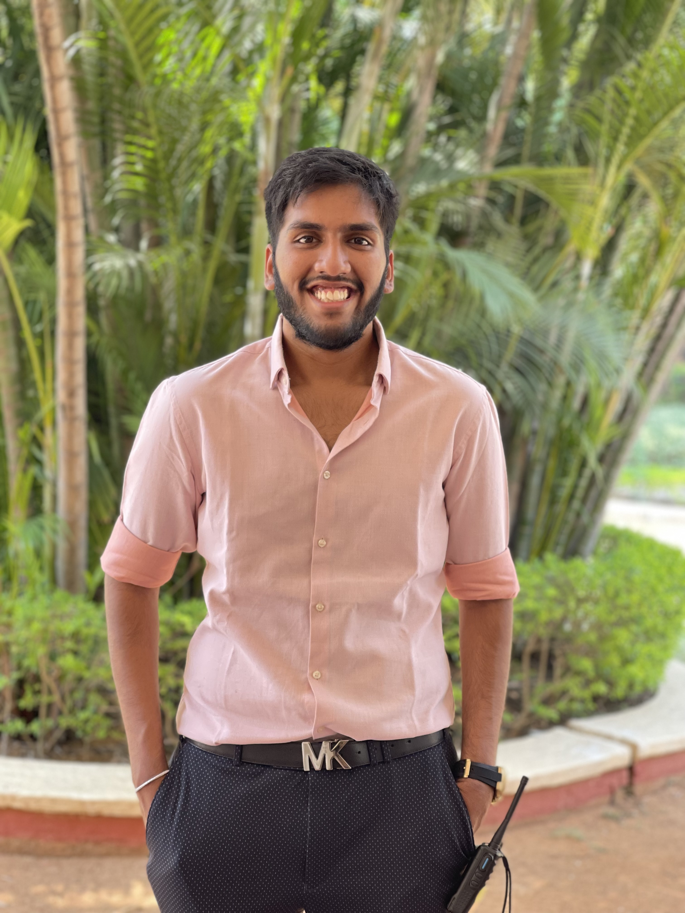

Jersey City, NJ | +15513285334 | cr457@njit.edu | LinkedIn
A passionate Computer Science student with experience in full-stack development, machine learning, and data structures. Seeking opportunities to apply my knowledge and technical skills to real-world projects.